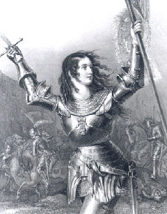

Anne Bonny and Mary Read became two of the most famed pirates. James Bonny, a nothing too special pirate and sailor, married Anne in 1718. Anne quickly grew to dislike her husband and caught the eye of Pirate Calico Jack Rackham. Calico offered to buy Anne from her husband, but with a rejected offer they snuck out at night and began a life of piracy. Anne fought in men’s clothing and was often considered just as dangerous as any male pirate. She didn’t have to conceal her gender with shipmates, but disguised herself when pillaging or in armed conflicts. She was fearless and an expert with a pistol, and often fought alongside another famed female pirate of the time, Mary Read.
1775-1844)
Pirate Princess of the China Sea
(1412-1431)
The Teen who saved France

At age 18, Jehanne d’Arc (“Joan of Arc”) led the French army to victory over the English at Orleans, and helped end the Hundred Years War. At 12 years old, she claimed to start having visions and communication with saints and angels, which told her to save her country from the invading English and she left home at 16. She traveled 375 miles in the winter of 1429 to reach the king at the time. King Charles VII didn’t know how to react when 17 year-old Joan approached him and said that she could save France. She eventually won him over, and he gave her army and a horse and told her to lead a handful of men to the battle at Orleans. She was responsible for directing troops, outlining strategies, and negotiating diplomacy with the British. After being captured, Joan was tried on 70 counts which included claiming to be in contact with god, witchcraft, and dressing like a man.
(1840-1889)
“The Apache Joan of Arc
Lozen, a Chihenne Chiricahua Apache warrior and medicine woman and military strategist, had a gift for riding and shooting and was interested in fighting and medicine even when she was younger. She had no interest in the domestic affairs and roles of the Apache women, and wanted to learn the ways of the warrior. She was an ally to the famous Geronimo, and had a sense of how to plan attacks and anticipate where the enemy would be or direction of attack. She often prayed to the highest Apache deity of creation for guidance, which is one of the reasons why she is compared to Joan of Arc. Lozen fought with her brother Victorio, a tribe leader, to protect their people from the U.S. government trying to steal their territory. Her brother writes that she was his “right hand, strong as a man, braver than most, and cunning in strategy. Lozen is a shield to her people.” In 1870, the Apache were driven out of their lands and onto reservations. Yet, Lozen and other members of her tribe kept fighting.
(1920-1958)
The genetic makeup of genius, overlooked
Rosalind Franklin was a rebel, and began questioning authority when she was little, asking her parents if they were sure god wasn’t a she and wanting to take the most challenging math classes offered. In 1962, three men were awarded the nobel prize for their claimed discovery of DNA. Franklin loved to advocate for herself, even if it meant butting heads with her boss and male colleagues. Maurice Wilkins was one of these colleagues, who, feeling frustrated, decided to take her work (without her permission of course) and show it to other scientists, Watson and Crick, struggling with incorrect models of DNA, yet Watson and Crick were both famed for this discovery later on. They used her “Photo 51” to publish a paper and win the Nobel Prize while she remained oblivious. She passed away at age 39 from Ovarian cancer, still not knowing that the three of them had stolen her work. Luckily, she has begun to get some recognition today and hopefully into the future.
(1920-1958)
Ground-breaking research and development
Ruby Hirose was born and raised in a Washington suburb, the first second-generation Japanese immigrant to graduate from her high school, and often faced both issues of racial identity and discrimination. She went on to graduate with a pharmacology degree and later a doctorate. Dr. Ruby Hirose was a Japanese-American biochemist and bacteriologist who conducted vaccine research essential to developing the polio vaccine. In 1940, she was one of only 10 women recognized at the American Chemical Society meeting in Ohio. She suffered from hay fever, helping her continue developing different treatments and also improved treatments that used pollen extracts to help with desensitizing allergies. Because of the fact that she was a Japanese American at the time of World War II, her family was sent to internment camps. Since Ruby was living in Cincinnati at the time, she was able to escape the same fate and could continue her research.